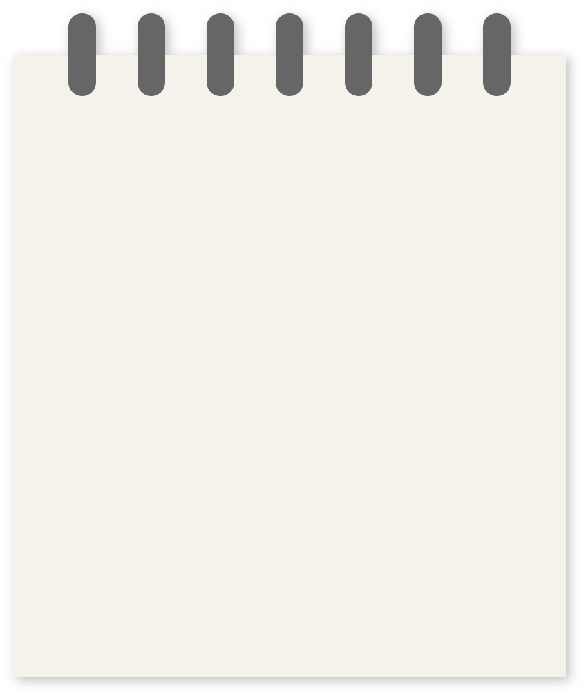
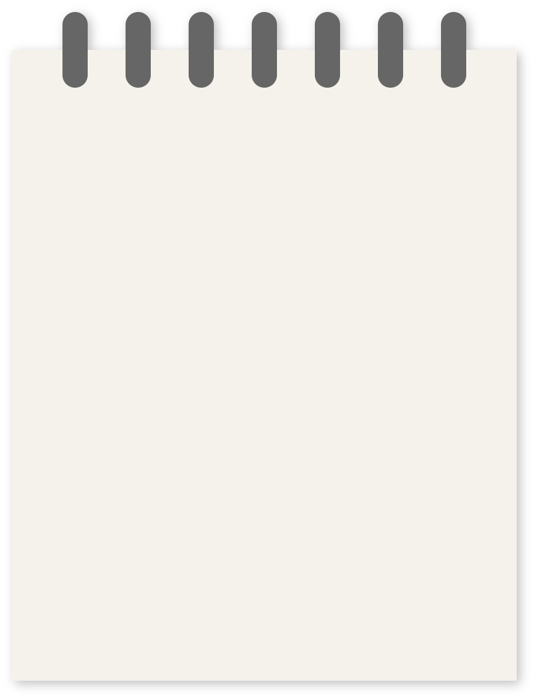

Innovations
The project for my master thesis was conducted during the early stages of the COVID-19 pandemic. The need for
improving virtual conferencing systems was great. By now, some of the implementations might be outdated.

Natural Desktop Behavior
Replace a static, synchronised UI with a customized work space.
- current systems decide what is shown on the main screen (usually the speaker)
- there is no possibility for unspoken social interaction
- studies show that people work best at their personal work space
- this system proposes a free desktop:
- desired content in main window
- rearrangement of other participants
- possibility for asynchronous slideshows
Digital Fidgeting
Increase attention by avoiding distractive multitaksing during online meetings.
- fidgeting & fiddling have very positive effects on attention and awareness levels
- though possible during online meetings, it is often replaced with distractive multitasks
- embedded in the UI to keep attention on the meeting
- zoom effect of toolbar
- drag & drop of other participants
- fly in of chat & screens window
- toggle buttons

Pixel-free Slideshows
Beautifully smooth slideshows instead of pixeled, laggy mpeg screenrecordings.
- current slideshows/screens are shared through mpeg screen recordings
- results in low quality, high lag & bandwidth
- this concept enables vectorbased screen sharing: no pixels, no stream, no lag
- user designs a screen & publishes it
- other users can view published screens
- async slideshows: users can review past slides
- interactive elements such us multiple choice, in-slide drawing, etc.
- audio-visual media is buffered asynchronously: zero quality loss
Implementation
A high-functional prototype was developed, allowing up to 8 people in a meeting,
one of which with admin privileges.
The front-end was developed in HTML5, CSS and JS.
The back-end HTTP server runs on node.js, with webRTC for the networking of webcam streams,
websockets for initial connection & content sharing, and pagekite for funneling the local server to the web.